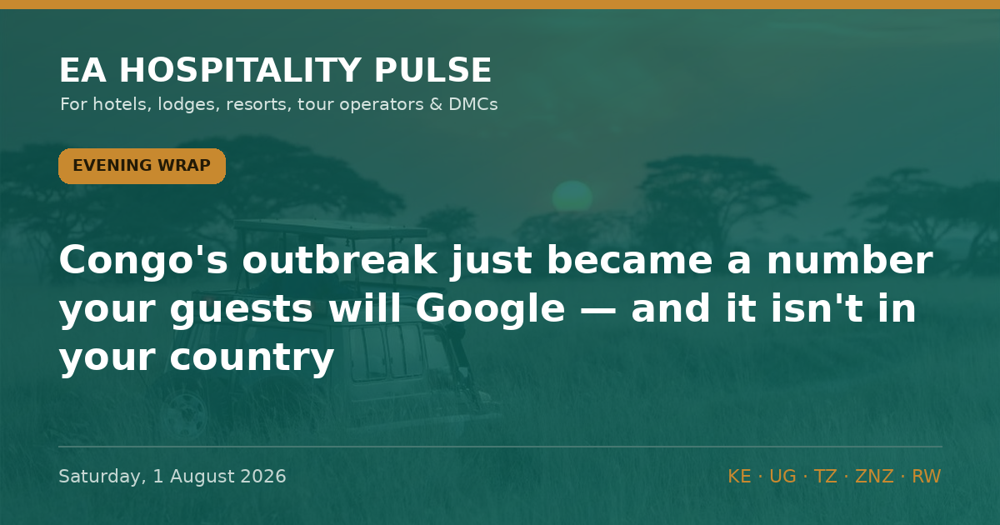

← All editionsCongo's outbreak just became a number your guests will Google — and it isn't in your country.
Congo's outbreak just became a number your guests will Google — and it isn't in your country.
━━━━━━━━━
1️⃣ DRC EBOLA NOW THE SECOND-LARGEST ON RECORD
DR Congo confirmed 3,532 cases and 1,556 deaths on 31 July (DRC Ministry of Communications, via Al Jazeera & CNN, 31 Jul), passing the 2018–20 eastern DRC outbreak's 3,481 total — which took nearly two years. This took about eleven weeks. Africa CDC calls the outbreak "uncontrolled," with contact tracing at 78.3% against the 90–95% needed to contain it (Xinhua, 31 Jul).
🎯 So what: the virus is ~1,500km from a Mara camp or a Zanzibar beach, but the headline is in your source markets tonight. Brief reservations now; measure booking pace, not just cancellations.
🏷 Bush/Beach/City | Regional | Confirmed
2️⃣ THE US BAN HOLDS TO 12 AUGUST — AND THE MATHS SAYS LONGER
Washington's entry suspension for foreign nationals present in DRC, Uganda or South Sudan in the prior 21 days runs to 4:59pm EDT on 12 Aug (US CDC order, per Fragomen, Jul). With DRC tracing below 80% and cases still climbing, an on-schedule lift looks unlikely. US posture today: Uganda Level 4, Rwanda Level 3 (zero domestic cases), Kenya and Tanzania Level 2. UK positions are softer and regional.
🎯 So what: don't quote US groups a "lifted ban." Sell UK, German and intra-African demand on Uganda's clean declaration; caveat every US-linked enquiry past 12 Aug with a flexible-cancellation clause.
🏷 City/Bush | UG/RW/KE/TZ | Confirmed
🔗 This edition on the web: https://eahospitalitypulse.com/editions/pulse-2026-08-01-evening.html
💼 Today's Big Read on LinkedIn: https://www.linkedin.com/company/ea-hospitality-pulse/
— EA Hospitality Pulse | Daily intelligence for city, bush & beach properties
📣 Telegram (full editions) 💬 WhatsApp (daily skim) 💼 LinkedIn (the Big Read) 🗂 Every edition